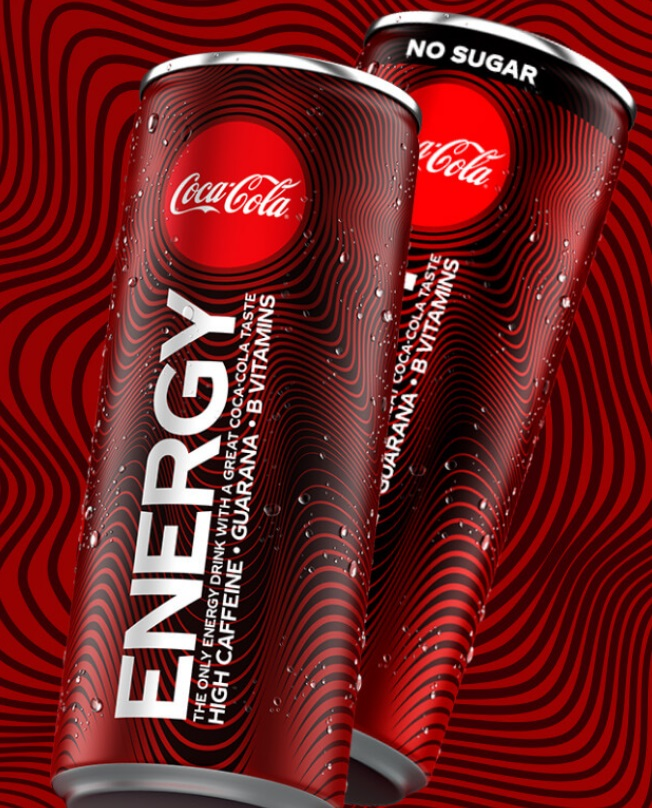

Prêt à partager ton énergie positive ? Découvre la nouvelle boisson signée Coca-Cola - le seul energy drink avec un bon goût de Coca-Cola. Parfaite pour des vies intenses qui nécessitent de l'énergie positive.
Coca-Cola Energy ne contient pas de taurine, à la différence de Red Bull, mais du guarana, une plante amérindienne découverte par un médecin allemand au XVIIIe siècle. Les graines de cet arbuste sont deux à trois fois plus riches en caféine que le café. Les Amérindiens les torréfiaient et en faisaient des bâtons de pâte qu'ils mâchouillaient pour tromper la faim. Le guarana est réputé pour combattre la fatigue et améliorer la vigilance.
Les équipes Coca-Cola ont mis au point une recette originale qui offre un bon goût de Coca-Cola, connu et apprécié de tous. Sans taurine, la boisson contient de la caféine d’origine naturelle, de l’extrait de guarana et des vitamines B.